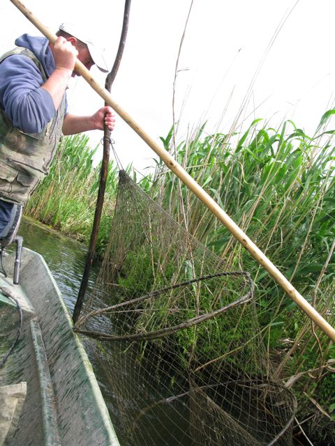

Subsistence fisheries Detailed module information...
At a glance
Focus on subsistence fisheries
Our initial fisheries models focused on mapping only subsistence use of fisheries, as opposed to their commercial or recreational value, which can be modeled separately. Commercial and recreational fisheries have different beneficiary groups and flow characteristics (i.e., means for their beneficiaries to reach and use the fishery resource). Although recreational and commercial fisheries are of great importance, their flow models are likely to be more complex, requiring accounting for trade networks and recreational choices. Subsistence fisheries by contrast only require an understanding of the species and quantity of fish harvested and used and the ability of users to access the resource, and are thus a logical starting point for modeling how beneficiaries use and value fisheries.
Many rural communities around the world depend on fisheries as a key protein source. Sustainable fisheries result from a good understanding of the linkages between deforestation, erosion, and sedimentation processes that take place on land but strongly affect coastal and marine systems.
In the field |
||
MadagascarThe models rely on global spatial datasets for fisheries, population density, and poverty, combined with non-spatial data on national fisheries use. Since such data are available for all nations, it is quite feasible to extend coverage of the ARIES subsistence fisheries model to other countries paying attention to the fact that key harvested fish species and dependence on subsistence fisheries differ by nation. In Madagascar the species we modeled are southern meagre or cob (Argyrosomus hololepidotus), sky emperor (Lethrinus mahsena), slender emperor (Lethrinus variegatus), and mangrove red snapper (Lutjanus argentimaculatus). |
|
|